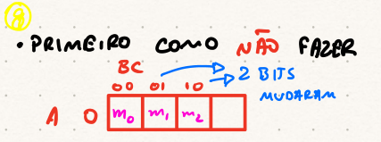
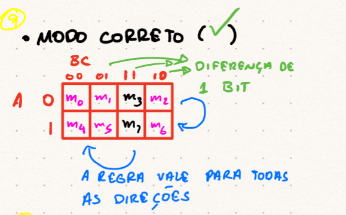

MATA38 - Projeto de Circuitos Lógicos
Página Inicial
Limitação da Álgebra Booleana
Para funções com muitas variáveis, a simplificação algébrica pode ser complexa e nem sempre garante a forma mais mínima.
| \(A\) | \(B\) | \(C\) | \(F\) |
|---|---|---|---|
| 0 | 0 | 0 | 0 |
| 0 | 0 | 1 | 0 |
| 0 | 1 | 0 | 1 |
| 0 | 1 | 1 | 0 |
| 1 | 0 | 0 | 1 |
| 1 | 0 | 1 | 1 |
| 1 | 1 | 0 | 1 |
| 1 | 1 | 1 | 1 |
Identidade Útil
Lembre-se da identidade: \(X + \bar{X}Y = X+Y\). Aplicando-a, \(A + \bar{A}(B\bar{C}) = A + B\bar{C}\).
| \(A\) | \(B\) | \(C\) | \(F\) | Mintermo |
|---|---|---|---|---|
| 0 | 0 | 0 | 0 | \(m_0\) |
| 0 | 0 | 1 | 0 | \(m_1\) |
| 0 | 1 | 0 | 1 | \(m_2\) |
| 0 | 1 | 1 | 0 | \(m_3\) |
| 1 | 0 | 0 | 1 | \(m_4\) |
| 1 | 0 | 1 | 1 | \(m_5\) |
| 1 | 1 | 0 | 1 | \(m_6\) |
| 1 | 1 | 1 | 1 | \(m_7\) |
Ordem Incorreta (NÃO FAZER) - Usa ordem binária sequencial. - Células adjacentes podem diferir em mais de 1 bit.

Ordem Correta (Código Gray) - Garante que adjacências (horizontal, vertical, e “enrolando”) diferem em 1 bit.

| A BC | 00 | 01 | 11 | 10 |
|---|---|---|---|---|
| 0 | m₀ (000) | m₁ (001) | m₃ (011) | m₂ (010) |
| 1 | m₄ (100) | m₅ (101) | m₇ (111) | m₆ (110) |
Nota
Atenção à troca de posição entre a 3ª e a 4ª coluna: \(11\) vem antes de \(10\) para manter a diferença de apenas 1 bit!
| A BC | 00 | 01 | 11 | 10 |
|---|---|---|---|---|
| 0 | 0 m₀ | 0 m₁ | 0 m₃ | 1 m₂ |
| 1 | 1 m₄ | 1 m₅ | 1 m₇ | 1 m₆ |
| A BC | 00 | 01 | 11 | 10 |
|---|---|---|---|---|
| 0 | 0 m₀ | 0 m₁ | 0 m₃ | 1 m₂ |
| 1 | 1 m₄ | 1 m₅ | 1 m₇ | 1 m₆ |
■ Grupo I (Quadra - Verde):
\(m(4,5,6,7) \Rightarrow\) Linha \(A=1\) inteira.
Elimina \(B\) e \(C\) \(\Rightarrow\) termo \(A\).
■ Grupo II (Par - Rosa):
\(m(2,6) \Rightarrow\) Coluna \(BC=10\).
\(A\) varia (\(0 \to 1\)) \(\Rightarrow\) termo \(B\bar{C}\).
Resultado Mínimo: \(F = A + B\bar{C}\)
Termo Redundante
O grupo \(m(3, 7)\) não é necessário porque \(m_1\) e \(m_3\) já estão cobertos pelo Grupo II e \(m_7\) está coberto pelo Grupo I. Logo, a expressão mínima é: \[F = AB + \bar{A}C\]
MATA38 - Projeto de Circuitos Lógicos